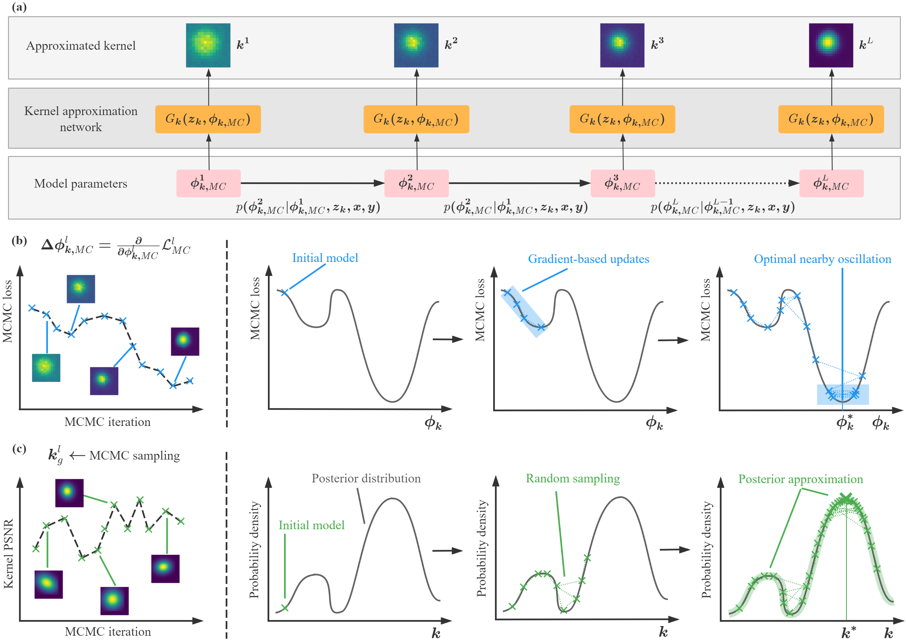
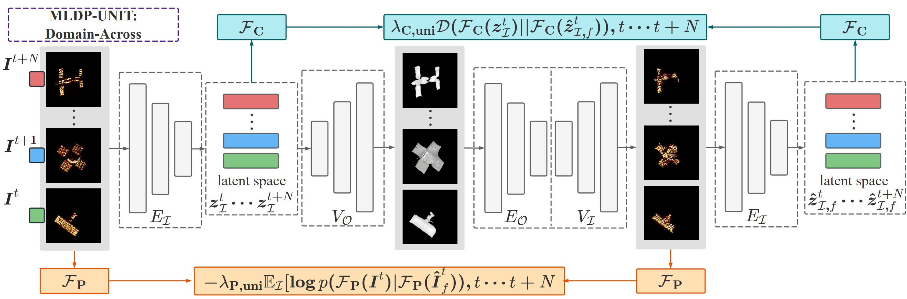
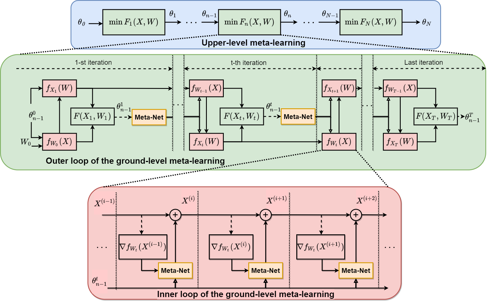
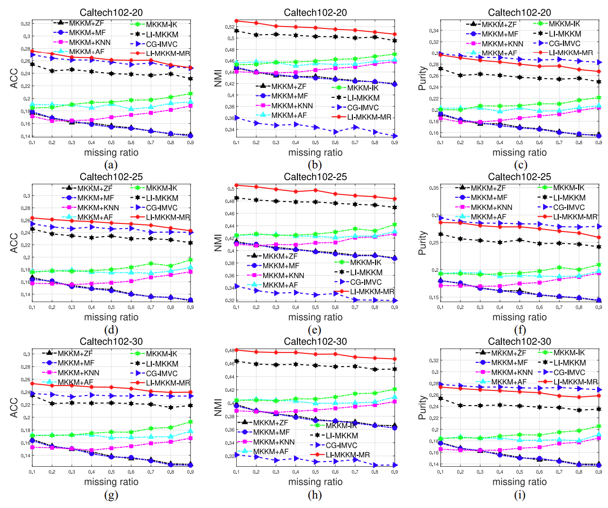
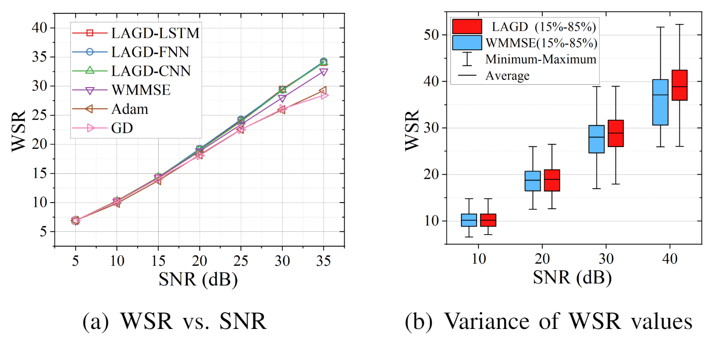

|
夏靖远/Jingyuan Xia 我2020年在伦敦帝国理工学院取得博士学位，本硕皆师从国防科技大学电子科学学院黎湘院士，目前在黎院士团队分管硕士/博士招生，以及博士后/教职招聘，有兴趣的也欢迎邮件咨询了解团队招录的详细信息。 目前我是国防科技大学电子科学学院的副教授（硕导），本人博士期间主攻方向是传统非凸优化理论与神经网络模型的结合，粗浅地建立一套学习辅助的灰箱优化理论体系。主要解决的是逆问题和盲逆问题求解中的各种难题，致力于在完整保留问题模型前提下引入神经网络化的学习辅助模块，实现无监督、无预训练地问题优化。主要课题方向围绕低质量图像恢复与增强、多模态图像和信号特征表征学习两个方面开展研究，目前技术应用（学生水文章毕业/评奖）主要涵盖图像超分辨、MISO/MIMO beamforming、ISAR成像、雷达目标智能识别、遥感图像处理、多模态AIGC等。 关于我：嘴碎、性急、嗓门大、好为人师，毒舌、强势、讲原则、爱请吃饭。我自己博士淋过雨，所以不会给你泼开水。但是金杯共汝饮，学术不相饶，生活上可以一起开黑、旅游、见天地、见众生、见自己，学业上追求培育严谨、踏实、讲逻辑、有条理、知辩证。 关于课题组：学生补助每月到手硕士（4-6千）、博士（7-9千），个人课题:项目工作时间比大致在8:2，软硬件方面提供完备保障。 关于你：我享受从零开始培养爱好科研的学者，排斥学术投机主义和精致利己主义。第一份工作会给方案、推代码、rewrite论文，但中后期希望你能独立自主探索未知的科技前行之路，享受日积跬步、以致千里的成长满足感。 欢迎邮箱咨询任何你感兴趣的事情。 I am now an Associate Professor (mater tutor) at the Department of Electronic Science and Technology, National University of Defense Technology (NUDT), China. Prior to being an academic scholar, I obtained my Ph.D degree at Imperial College London in 2020; finished my Msc.Eng and B.Eng in NUDT, China. My research interest lies in low-level image processing and intelligent signal processing, combining advanced non-convex optimization theory and statistical modeling using learning-aided approaches. Feel free to contact on anything! |

|
Events and NewsMay 2024:Happy to announce that our paper Blind Super-Resolution Via Meta-Learning and Markov Chain Monte Carlo Simulation got accepted to TPAMI! Mar 2024:Happy to announce that our paper A Dynamic Kernel Prior Model for Unsupervised Blind lmage Super-Resolution got accepted to CVPR! Sep 2023:Happy to announce that our paper Meta-learning based Domain Prior with Application to Optical-lSAR lmage Translation got accepted to TCSVT! Sep 2023:Happy to announce that our paper Metalearning-based alternating minimization algorithm for nonconvex optimization got accepted to TNNLS! |

|
A Dynamic Kernel Prior Model for Unsupervised Blind Image Super-Resolution
Zhixiong Yang, Jingyuan Xia, Shengxi Li, Xinghua Huang, Shuanghui Zhang, Zhen Liu, Yaowen Fu, Yongxiang Liu CVPR, 2024 Paper/ PDF/ Code The proposed DKP is a plug-and-play tool, which can be combined with the off-the-shelf image restoration model, e.g., DIP and Diffusion model, to realize unsupervised blind image super-resolution. |

|
Meta-learning based blind image super-resolution approach to different degradations
Zhixiong Yang and Jingyuan Xia and Shengxi Li and Wende Liu and Shuaifeng Zhi and Shuanghui Zhang and Li Liu and Yaowen Fu and Deniz Gündüz Neural Networks, 2024 Paper/ PDF/ Code DDSR is an unsupervised blind SISR method, which can handel different degradations, such as partial covered, noise, and dark. |
|

|
Blind Super-Resolution Via Meta-Learning and Markov Chain Monte Carlo Simulation
Xia, Jingyuan and Yang, Zhixiong and Li, Shengxi and Zhang, Shuanghui and Fu, Yaowen and Gündüz, Deniz and Li, Xiang IEEE Transactions on Pattern Analysis and Machine Intelligence, 2024 Paper/ PDF/ Code This paper propose an plug-and-play blind image super-resolution method based on the Meta-learning and Markov Chain Monte Carlo, which contributes to preventing bad local optimal solutions from the optimization perspective. |
|

|
Meta-learning based Domain Prior with Application to Optical-ISAR Image Translation
Liao, Huaizhang and Xia, Jingyuan and Yang, Zhixiong and Pan, Fulin and Liu, Zhen and Liu, Yongxiang IEEE Transactions on Circuits and Systems for Video Technology, 2023 Paper/ PDF/ Code This paper focuses on generating Inverse Synthetic Aperture Radar (ISAR) images from optical images, in particular, for orbit space targets. ISAR images are widely applied in space target observation and classification tasks, whereas, limited to the expensive cost of ISAR sample collection, training deep learning-based ISAR image classifiers with insufficient samples and generating ISAR samples from emulation optical images via image translation techniques have attracted increasing attention. Image translation has highlighted significant success and popularity in computer vision, remote sensing and data generation societies. However, most of the existing methods are implemented under the discipline of extracting the explicit pixel-level features and do not perform effectively while entailing translation to domains with specific implicit features, such as ISAR image does. We propose a meta-learning based domain prior to implicit feature modelling and apply it to CycleGAN and UNIT models to realize effective translations between the ISAR and optical domains. Two representative implicit features, ISAR scattering distribution feature from the physical domain and the classification identifying feature from the task domain, are elaborately formulated with explicit modelling in statistic form. A meta-learning based training scheme is introduced to leverage the mutual knowledge of domain priors across different samples, and thus allows few-shot learning capacity with dramatically reduced training samples. Extensive simulations validate that the obtained ISAR images have better visible-authenticity and training-effectiveness than the existing image translation approaches on various synthetic datasets. Source codes are available at. |
|

|
Metalearning-Based Alternating Minimization Algorithm for Nonconvex Optimization
Xia, Jing-Yuan and Li, Shengxi and Huang, Jun-Jie and Yang, Zhixiong and Jaimoukha, Imad M. and Gündüz, Deniz IEEE Transactions on Neural Networks and Learning Systems, 2023 Paper/ PDF/ Code In this article, we propose a novel solution for nonconvex problems of multiple variables, especially for those typically solved by an alternating minimization (AM) strategy that splits the original optimization problem into a set of subproblems corresponding to each variable and then iteratively optimizes each subproblem using a fixed updating rule. However, due to the intrinsic nonconvexity of the original optimization problem, the optimization can be trapped into a spurious local minimum even when each subproblem can be optimally solved at each iteration. Meanwhile, learning-based approaches, such as deep unfolding algorithms, have gained popularity for nonconvex optimization; however, they are highly limited by the availability of labeled data and insufficient explainability. To tackle these issues, we propose a meta-learning based alternating minimization (MLAM) method that aims to minimize a part of the global losses over iterations instead of carrying minimization on each subproblem, and it tends to learn an adaptive strategy to replace the handcrafted counterpart resulting in advance on superior performance. The proposed MLAM maintains the original algorithmic principle, providing certain interpretability. We evaluate the proposed method on two representative problems, namely, bilinear inverse problem: matrix completion and nonlinear problem: Gaussian mixture models. The experimental results validate the proposed approach outperforms AM-based methods. |
|

|
Localized Incomplete Multiple Kernel k-Means With Matrix-Induced Regularization
Li, Miaomiao and Xia, Jingyuan and Xu, Huiying and Liao, Qing and Zhu, Xinzhong and Liu, Xinwang IEEE Transactions on Cybernetics, 2023 Paper/ PDF Localized incomplete multiple kernel k -means (LI-MKKM) is recently put forward to boost the clustering accuracy via optimally utilizing a quantity of prespecified incomplete base kernel matrices. Despite achieving significant achievement in a variety of applications, we find out that LI-MKKM does not sufficiently consider the diversity and the complementary of the base kernels. This could make the imputation of incomplete kernels less effective, and vice versa degrades on the subsequent clustering. To tackle these problems, an improved LI-MKKM, called LI-MKKM with matrix-induced regularization (LI-MKKM-MR), is proposed by incorporating a matrix-induced regularization term to handle the correlation among base kernels. The incorporated regularization term is beneficial to decrease the probability of simultaneously selecting two similar kernels and increase the probability of selecting two kernels with moderate differences. After that, we establish a three-step iterative algorithm to solve the corresponding optimization objective and analyze its convergence. Moreover, we theoretically show that the local kernel alignment is a special case of its global one with normalizing each base kernel matrices. Based on the above observation, the generalization error bound of the proposed algorithm is derived to theoretically justify its effectiveness. Finally, extensive experiments on several public datasets have been conducted to evaluate the clustering performance of the LI-MKKM-MR. As indicated, the experimental results have demonstrated that our algorithm consistently outperforms the state-of-the-art ones, verifying the superior performance of the proposed algorithm. |
|

|
A Learning-Aided Flexible Gradient Descent Approach to MISO Beamforming
Yang, Zhixiong and Xia, Jing-Yuan and Luo, Junshan and Zhang, Shuanghui and Gündüz, Deniz IEEE Wireless Communications Letters, 2022 Paper/ PDF/ Code This letter proposes a learning aided gradient descent (LAGD) algorithm to solve the weighted sum rate (WSR) maximization problem for multiple-input single-output (MISO) beamforming. The proposed LAGD algorithm directly optimizes the transmit precoder through implicit gradient descent based iterations, at each of which the optimization strategy is determined by a neural network, and thus, is dynamic and adaptive. At each instance of the problem, this network is initialized randomly, and updated throughout the iterative solution process. Therefore, the LAGD algorithm can be implemented at any signal-to-noise ratio (SNR) and for arbitrary antenna/user numbers, does not require labelled data or training prior to deployment. Numerical results show that the LAGD algorithm can outperform of the well-known WMMSE algorithm as well as other learning-based solutions with a modest computational complexity. Our code is available at https://github.com/XiaGroup/LAGD. |
Miscellaneameta reviewer：PRCV reviewer：CVPR、NIPS、ICCV、ECCV、AAAI |
|
Thank Dr. Jon Barron for sharing the source code of the website. |